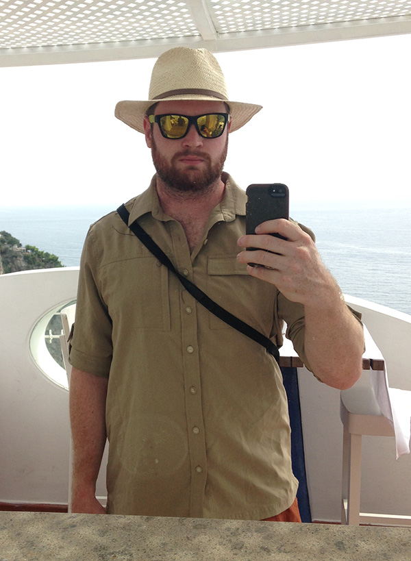

I arrived in New York City one year after graduating from Syracuse University and a winter spent in Park City, Utah, working for both the Sundance Film Festival and the local mountain, Park City Mountain Resort, as a liftie. I had majored in Political Science and, after a brief stint on an American University professor's underdog campaign for U.S. Senate in Maryland that, despite getting a fraction of the vote, was lauded for its early embrace of social media to reach voters, sought out to find a job in digital media that built on that success.
I wound up at Deep Focus, a boutique advertising agency based in SoHo, on a team that was helping pioneer a new type of public relations built around blogs, Facebook and Internet videos, instead of TV, the radio, newspapers and magazines. After working on campaigns as varied as a Super Bowl commmercial with Shaq to the launch of one of the most unique video game titles in years — Dead Space — I moved on to Attention, a social media-focused agency that deployed teams of consultants to companies that needed both a social media strategy and tbe people to execute one.
During my time in marketing, I began to write. At first, I wrote for free for Free Williamsburg, a blog focused on the news, culture and food in Williamsburg, Brooklyn. That led to a paying gigs with NBC New York, where I contributed short news articles about the greater New York City area, some of which then made it to the TV screens in the city's yellow cabs, and BuzzFeed, where I wrote short posts about viral content I found on the Internet.
Somewhere in there I set a world record for most-tweets sent to M.C. Hammer using an iPhone.
One of my clients while at Attention was a then-startup news website managed by Tina Brown, a former New Yorker editor, called The Daily Beast. I'd mostly try and help their stories get noticed, but after a stunt of my own targeting a Facebook post by then-Gov. Governor Sarah Palin brought a barrage of (mostly unwanted) attention, The Daily Beast asked if I'd write about it, which led to a job as the site's Technology Editor.
At the time, the news business was rapidly constricting as rounds of layoffs and closures decimated organizations like Conde Nast, the New York Times and untold local newspapers. Social media, however, offered a brightspot for news organizations looking to expand their readership and increase traffic. The Daily Beast had a mediocre social media presense but no one person directly managing, so I jumped on the opportunity and became the site's first social media editor, where I managed the company's Facebook, Twitter, tumblr and a variety of other social media pages. I also continued writing, mostly about Internet culture, politics and technology.
Then came Newsweek. In 2011 the magazine, itself hollowed out after years of buyouts and ever-shrinking circulation, merged with The Daily Beast, in a deal that made sense to the two billionaries that owned the two companies and no one else. I was instilled as social media editor of the merged newsroom, and while there oversaw a four million strong community across the two brands' social media channels, launched and managed coverage of health and technology, ran real-time coverage of various global news like the Arab Spring and the devastating tsunami in Japan, and helped devise the cover of the magazine's last print issue. We gave it a hashtag.
Now, as Mashable's first real-time news editor, I take the lead on developing responses to breaking news stories using Mashable's award-winning social media accounts, website and live-blogging tools.